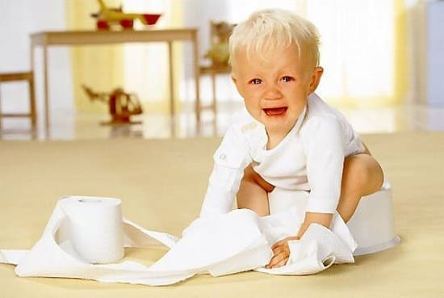
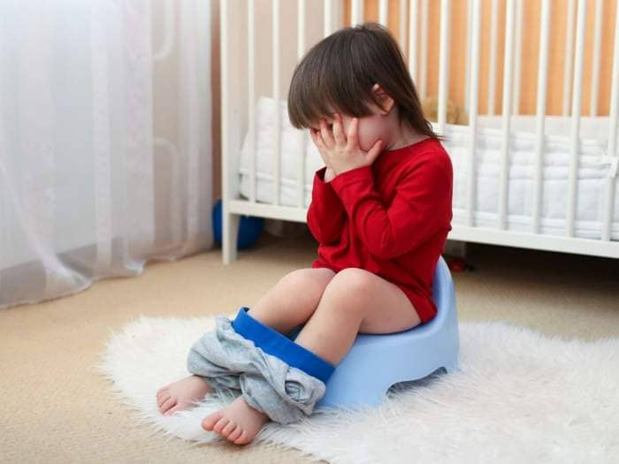
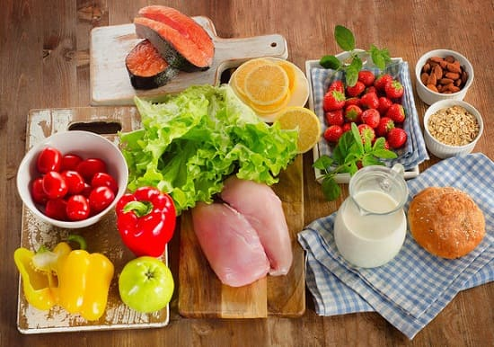
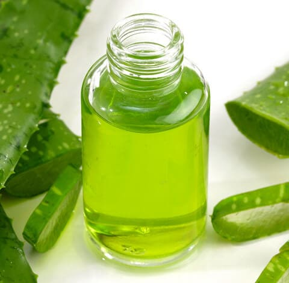
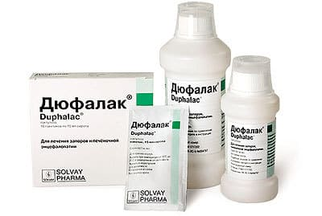

Фактически у каждого ребенка хоть раз в жизни был запор. Хотя это может быть довольно болезненным и пугающим состоянием и для ребенка, и для родителей, при надлежащем лечении запор довольно легко проходит. Однако у некоторых детей может быть хронический запор. При правильном питании, приеме смягчающих стул добавок, руководствуясь нашим справочником по запорам у детей, вы и ваш ребенок справитесь с этой проблемой.
СИМПТОМЫ
Диагностика запора может показаться легкой задачей, но иногда запор у ребенка остается незамеченным и становится причиной повторяющихся приступов боли в животе. Вот некоторые признаки того, что у вашего ребенка, возможно, запор:
• ребенок с трудом ходит «по-боль-шому» (но не жалуется);
• каловые массы толстые, как бревна;
• дефекация один раз в несколько дней;
• ребенку требуется много времени на дефекацию (он больше 5 минут сидит на горшке);
• каловых масс много;
• каловые массы в виде небольших шариков (или их конгломератов) — так называемый «овечий кал»;
• мазки кала на нижнем белье.
Если ваш ребенок оправляется один раз в несколько дней, но у него нет болей в животе, стул мягкий и соразмерный, то это не запор. Большинство младенцев оправляются несколько раз в день в первые недели жизни. Затем у некоторых стул становится реже. Если ваш ребенок оправляется спокойно, а каловые массы мягкие — вам нечего волноваться.

ЧТО СДЕЛАЕТ ВРАЧ
У врача есть несколько возможностей помочь вам. Для подтверждения диагноза запора он может назначить рентгенографию живота (скопления каловых масс в кишечнике хорошо видны в рентгеновских лучах), прощупает твердые скопления кала в животе ребенка, исключит другие причины боли в животе, при необходимости проведет ректальный осмотр.
ЧТО МОГУТ СДЕЛАТЬ РОДИТЕЛИ
Этот раздел посвящен хроническим и повторяющимся запорам. Если у вашего ребенка это первый случай, и он просто с трудом оправился, не утруждайте себя чтением всех подробностей. Вот быстрое решение проблемы: купите детские свечи с глицерином и порошок для приготовления напитка с клетчаткой (например, смесь Фрисовом или средство от запоров, которое может использоваться с периода новорожденности, — Дюфалак для детей от года и старше). Вводите свечи один-два раза в день (в соответствии с инструкцией) и в течение нескольких дней давайте ему напиток с клетчаткой. Эта комбинация облегчит дефекацию и размягчит стул. Если это не помогает, купите детскую клизму (эту инструкцию действительно необходимо прочитать). Если и клизма не поможет — обращайтесь к врачу.
Помимо рекомендованного нами быстрого решения, которое можно применить при первом эпизоде или при внезапных обострениях заболевания, вы можете многое предпринять для коррекции основной проблемы. Первый шаг — устранить возможные причины, второй — использовать натуральные добавки или лекарства, чтобы облегчить затруднения.
УСТРАНЕНИЕ ВОЗМОЖНЫХ ПРИЧИН
Запор может быть вызван любым из следующих факторов:

ЛЕЧЕНИЕ ЗАПОРА НАТУРАЛЬНЫМИ СРЕДСТВАМИ
Пока вы будете выяснять причины запора, в питание ребенка полезно добавить некоторые продукты, которые способствуют восстановлению стула. Начните с первого и каждые несколько дней добавляйте следующий продукт из списка, пока не получите результат:

СОВЕТ ДОКТОРОВ СИРС: ПОЛУЧИЛ СЛИШКОМ МНОГО МОЛОКА? Обычная и часто очевидная причина запора у малышей — введение коровьего молока. Это же может произойти и с ребенком постарше, выпившим слишком много молока. Перейдите на безмолочную диету на один-два месяца и посмотрите, улучшится ли ситуация. |
ЛЕКАРСТВЕННЫЕ ПРЕПАРАТЫ ОТ ЗАПОРА
Если вышеописанные способы не помогают или нужно действовать быстрее, то детям старше двух лет можно дать безрецептурные средства:
Рецептурные препараты. Существуют препараты, которые может выписать врач. Они действительно несколько эффективнее и лучше, чем безрецептурные.

Перепрограммирование толстой кишки при запоре. Здоровый толстый кишечник предпочитает оставаться пустым. Когда каловые массы заполняют и растягивают прямую кишку, она начинает сокращаться, выталкивая их наружу (вы при этом ощущаете позывы на дефекацию). При хроническом запоре толстый кишечник настолько привыкает быть заполненным и перерастянутым, что теряет свою способность выводить каловые массы. Поэтому лечение запора надо продолжать не менее трех месяцев (помните, что препараты с сенной не предназначены для длительного применения), при этом следите, чтобы толстый кишечник вовремя опорожнялся — это способствует возвращению его к нормальному размеру. Через три месяца лечение можно прекратить и посмотреть, сможет ли ребенок самостоятельно ходить «по-большому».
Здоровье ребенка от докторов Сирс / Сирс У. и др.